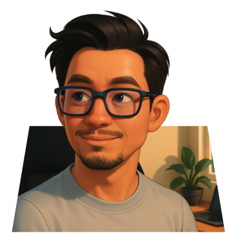

AI × 系統開發 × 網頁設計
經歷：網頁程式設計師、系統開發工程師
專長領域：
我叫陳小奇，2000 年出生，畢業於 CwC 碩士學程，專業橫跨 AI、系統開發與網頁設計。過去我曾擔任網頁程式設計師與系統開發工程師，累積多年從前端介面到後端架構的實戰經驗，專注於打造穩定、高效且可擴充的數位產品。我深信，科技的價值不在於炫技，而在於真正解決問題、提升效率並創造新的可能性。
創業對我而言，不只是建立一家公司，而是建構一套能持續進化的系統思維。我將 AI 技術與產品設計結合，優化開發流程，提升用戶體驗，同時降低企業的營運成本。我善於從 0 到 1 架構完整系統，也能從 1 到 100 持續優化與規模化成長。
我的願景是打造一個以創新為核心、以實用為導向的科技平台，讓技術不再只是工具，而是驅動創作者與企業突破界線的引擎。我期待與志同道合的夥伴合作，一起用技術創造真正有影響力的產品與價值。